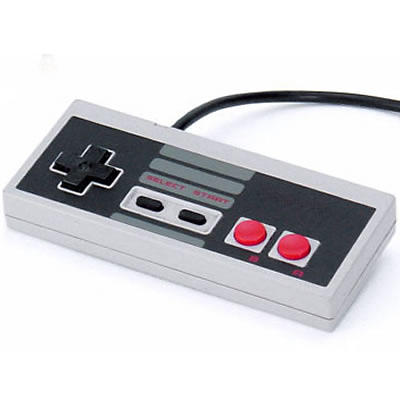
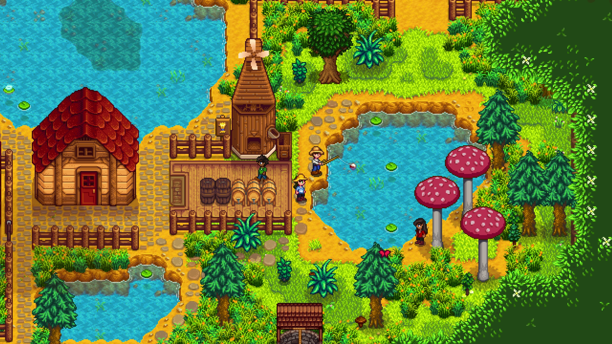

Bakgrund
Mitt första minne av att spela ett tv-spel är just Super Mario bros, i vardagsrummet efter skolan med en kompis. Jag minns musiken, jag minns hur ont i tummarna man hade efter att ha spelat som en galning. Jag minns när man hittade en ny genväg och euforin när man klarade ut spelet efter att ha hållit andan när Bowser nästan förstörde allt. Jag är så tacksam att min generation fick växa upp i en tid som inte kretasade kring sociala medier och bara skärmar. Men vi fick ändå växa upp tillsammans med teknologin och vara med i utvecklingen av spel. Nedan hittar du en lista på några av mina favoritspel genom tiderna.

| Namn | Konsol | Period i livet | Antal timmar |
|---|---|---|---|
| Stardew Valley | Nintendo Switch | Vuxen | Alldeles för många |
| Zelda TOTK | Nintendo Switch | Vuxen | Heltidsjobb |
| Hogwarts Legacy | Nintendo Switch | Vuxen | Helt besatt |
| Pokemon Snap 1 & 2 | Nintendo 64 och Switch | Barn-Vuxen | Gissar 700 |
| Fire Emblem (Path of Radiance) | Nintendo Game Cube | Barn | Så fort jag kom hem till min kompis |
| Super Mario bros. | Nintendo NES | Barn | Så länge det krävdes för att klara ut det |
| Zoo Tycoon 2 | PC | Barn | Alla |

Hedersomnämnande
Förutom dom "större spelen" som ofta spelades tillsammans med en kompis så finns det så otroligt många mindre spel som jag kunde sitta med ensam, ibland var det Röj, Harpan och Mahjong på datorn, andra gånger var det Sudoku eller andra pusselspel i en tidning som mormor klippte ut och gav till mig.
Om ni vill upptäcka/återupptäcka ett roligt spel som spelades flitigt varje dag efter skolan hos mig som barn finns spelet Bubble Trouble här: www.1001games.com/skill/bubble-trouble